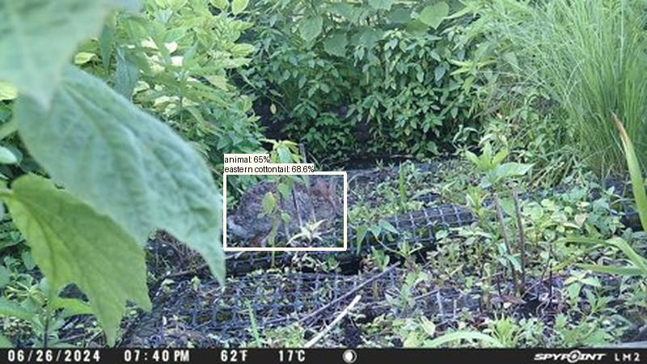
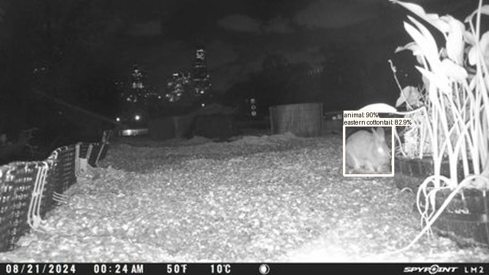

Result type: detections_animal, image: images/batch_2/2024-06-29_WM_Boardwalk_D--PICT1332.JPG, max conf: 0.647
Result type: detections_animal, image: images/batch_3/2024-08-31_UR004--PICT0042.JPG, max conf: 0.902
Result type: detections_animal, image: images/batch_3/2024-08-31_UR004--PICT0088.JPG, max conf: 0.828